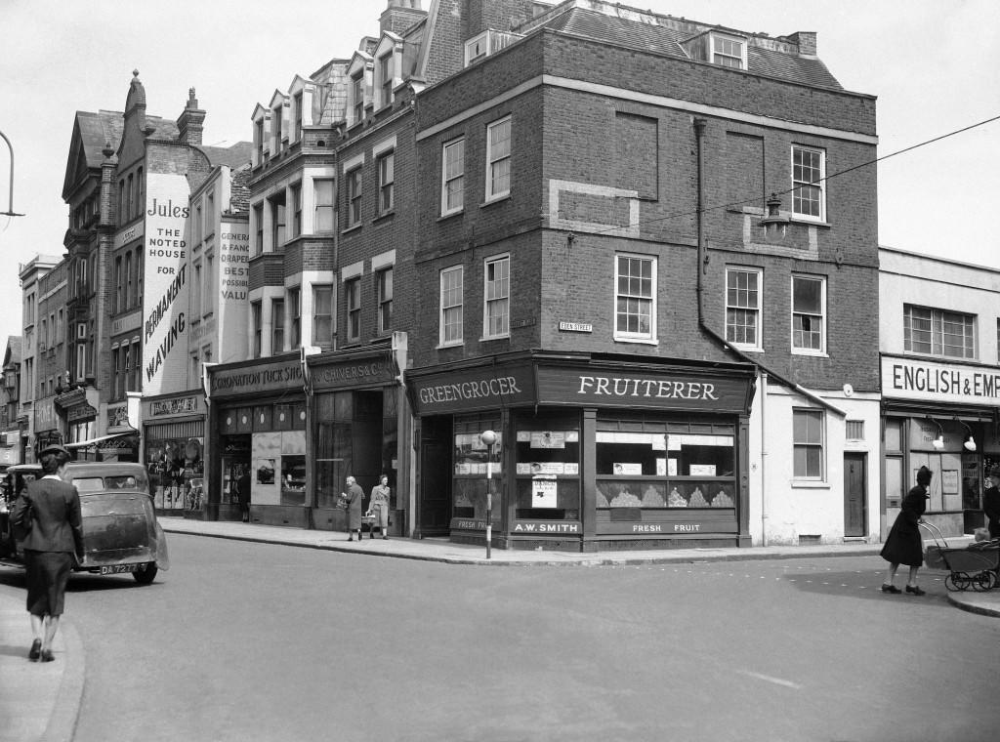

A
black story, or
situation puzzle, is a puzzle in which participants are to construct a story that the host has in mind, basing on a situation that is given at the start. For the purposes of these stories, the participants may ask the host yes-or-no questions. The following are some of my favorite black stories. Have someone read the solution and then act as host!
A pictoral black story:

Click here to see the solution.
This is a pillbox. This particular one is from London in WWII.